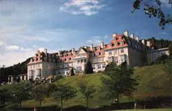

|
Peebles, Scotland June 17th - 21st, 2002 |

|
|
|
Peebles, Scotland June 17th - 21st, 2002 |
|
|  | Peebles Hotel Hydro is situated on the outskirts of Peebles, a picturesque and historic market town in the heart of the Scottish Borders. It is 22 miles (36 km) southwest of Edinburgh and 55 miles (88 km) southeast of Glasgow, and so is within easy reach of Scotland's major airports, but is in a peaceful and secluded location. |
| The local organisers are Philip Knight and Alison Ramage, both based at the Department of Mathematics of the University of Strathclyde, and Andy Wathen from Oxford University Computing Laboratory. The scientific program will be arranged by the Householder Committee, which is currently chaired by Nick Higham from the University of Manchester. |
A list of previous meetings
An article about Householder which appeared in SIAM News
A biography of Householder